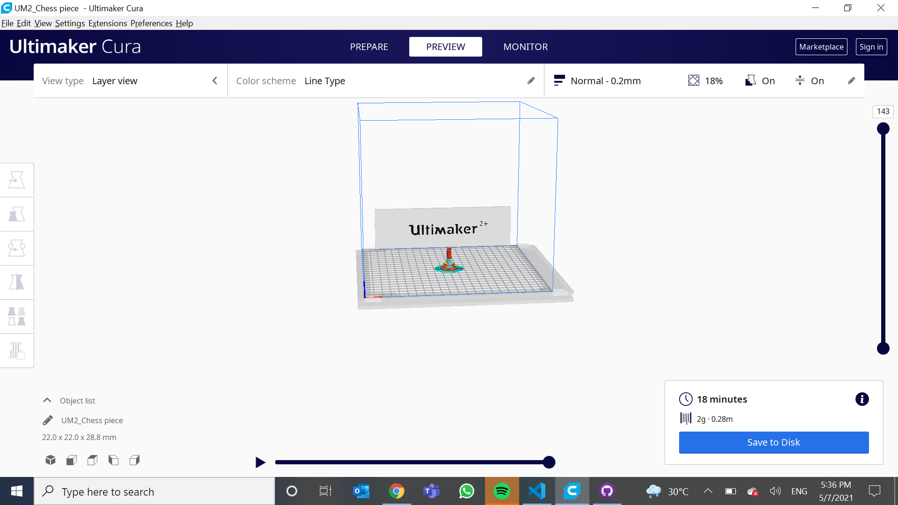

3D printing chess piece
Before i had my 3d printing i will have to do the 3d printing certification quiz and in th quiz i tried 3 times so for my first tries i scored 60% and i decided to try the second times and after i completed second tries i scored 70% and i decided to try for thrid tries and in the thrid tries i manage to scored a 90% and next i have to save the knight chess piece as STL file and import the file to cura after i have import the file into cura i have to change the wall thicknes into 0.8mm, infill i have to change it into 18 percent and infil pattern i have to change to grid and lastly for support i have to check the box to make sure there is support after i have finished with all the settings i will have to slice it to make sure that the print does not be more than 45 mins.The above picture shows that i have slice the chess piece.

.JPG)
Next after i have finished i will have to save the chess piece into the SD cards in order for the machine to print my chess piece before i start my printing when the machine is being heated up at the same time i will have to make sure that the 3d printer does not have any dust on the plate if there is no dust on the plate i will then be able to start my 3d printing first i will insert the SD card into the 3d printer after i have insert i will start the 3d printing the above two pictures are settings for cura which was recommended by my lecturer.


After i have finshed the 3d printing i will have to let the machine cool down about 50 mins in order for me to collect my
prototype out after i get the prototype out i wil have to cut out the access parts in order for the prototype to look like a chess piece
the above picture is the prototype that is succesfully printed and the next picture is the chess peiece that has been cut nicely without any access
parts.
The above picture shows the result for my 3d print quiz